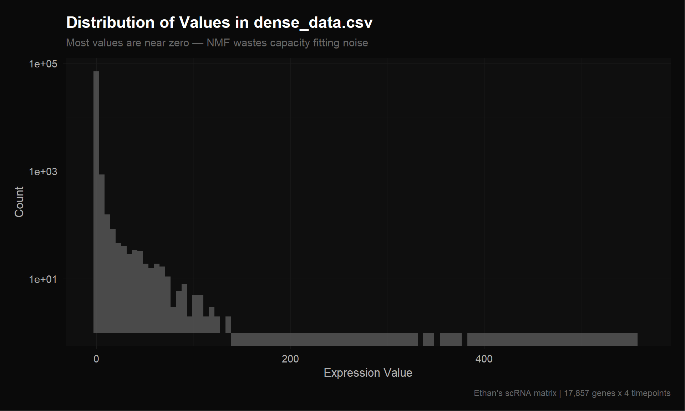
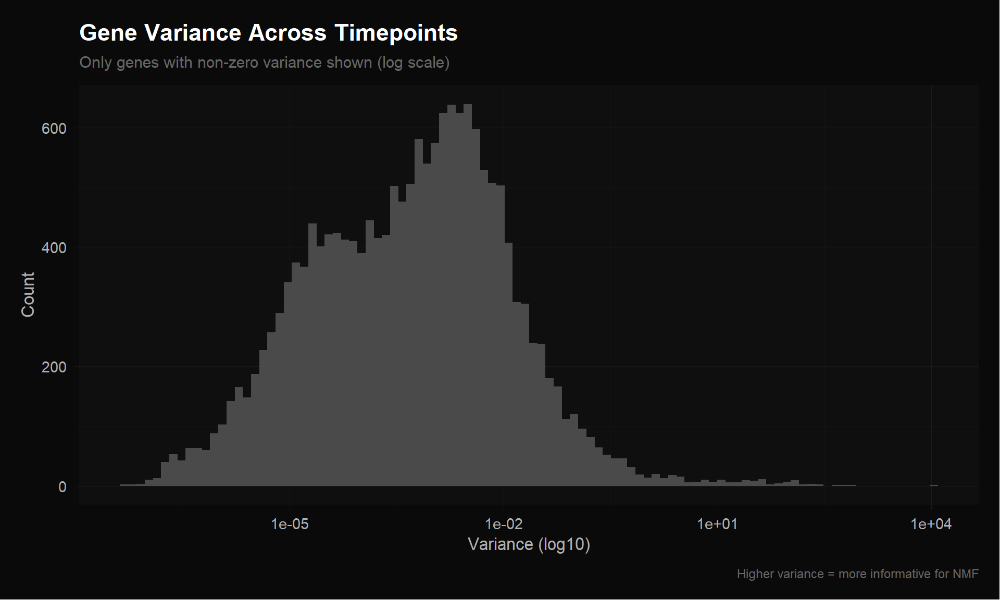
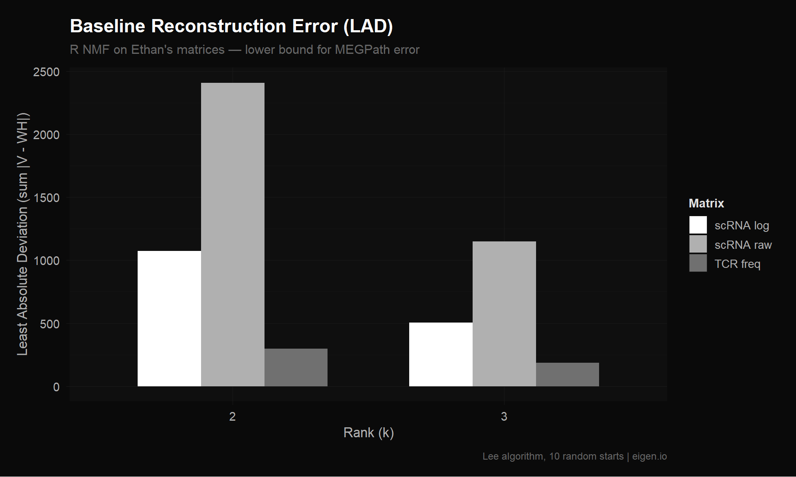

Code
library(Seurat)
library(ggplot2)
library(dplyr)
library(Matrix)
source("theme_donq.R")
data_dir <- "NMF Research Data/Data (scRNA, TCR)"Trace his testing.R exactly, verify outputs, identify problems
Before we improve anything, we need to:
testing.R preprocessing step by stepdense_data.csv, dense_dataLT.csv)Ethan’s NMF runs in MEGPath (C++ simulated annealing), not R. The error metric MEGPath uses is Least Absolute Deviation (sum of |V - WH|). We’ll compute both LAD and Frobenius norm for completeness.
library(Seurat)
library(ggplot2)
library(dplyr)
library(Matrix)
source("theme_donq.R")
data_dir <- "NMF Research Data/Data (scRNA, TCR)"This is the same published object Ethan loads in testing.R line 1.
sobj <- readRDS("NMF Research Data/Copy of Ito_MQ_scRNAseq_sct(1).rds")
cat("Cells: ", ncol(sobj), "\n")Cells: 4876 cat("Genes: ", nrow(sobj), "\n")Genes: 17857 cat("Assays: ", paste(Assays(sobj), collapse = ", "), "\n")Assays: RNA, SCT cat("Default assay:", DefaultAssay(sobj), "\n")Default assay: RNA # What metadata columns exist?
cat("Metadata columns:\n")Metadata columns:print(colnames(sobj@meta.data)) [1] "orig.ident" "nCount_RNA"
[3] "nFeature_RNA" "nCount_HTO"
[5] "nFeature_HTO" "HTO_maxID"
[7] "HTO_secondID" "HTO_margin"
[9] "HTO_classification" "HTO_classification.global"
[11] "hash.ID" "channel"
[13] "cdr3s_aa" "percent.mt"
[15] "percent.ribo" "Scrublet.Score"
[17] "Predicted.Doublets" "S.Score"
[19] "G2M.Score" "CC.Difference"
[21] "Phase" "nCount_SCT"
[23] "nFeature_SCT" "SCT_snn_res.0.8"
[25] "seurat_clusters" "seurat_clusters2" # HTO hashtag assignments — this is what Ethan groups by
cat("\nHTO_maxID (timepoint assignments):\n")
HTO_maxID (timepoint assignments):print(table(sobj$HTO_maxID))
HashTag1 HashTag2 HashTag3 HashTag4
1861 223 2137 655 # Cluster assignments
cat("\nCluster distribution:\n")
Cluster distribution:if ("seurat_clusters" %in% colnames(sobj@meta.data)) {
print(table(sobj$seurat_clusters))
}
0 1 2 3 4 5 6 7 8 9 10 11 12
937 851 615 516 402 345 335 235 226 191 96 78 49 # What's in the RNA assay vs SCT assay?
cat("=== RNA assay ===\n")=== RNA assay ===DefaultAssay(sobj) <- "RNA"
cat("Layers:", paste(Layers(sobj), collapse = ", "), "\n")Layers: counts, data, scale.data # Check if "data" layer exists (this is what Ethan uses)
rna_data_sample <- LayerData(sobj, layer = "data")[1:5, 1:5]
cat("\nRNA 'data' slot (first 5x5):\n")
RNA 'data' slot (first 5x5):print(as.matrix(rna_data_sample)) MQpool1_RS-03742653_AAACCTGTCGCGTTTC-1
AL627309.1 0
AL627309.5 0
LINC01409 0
FAM87B 0
LINC01128 0
MQpool1_RS-03742653_AAACCTGTCTTGCAAG-1
AL627309.1 0
AL627309.5 0
LINC01409 0
FAM87B 0
LINC01128 0
MQpool1_RS-03742653_AAACGGGCAAACTGCT-1
AL627309.1 0
AL627309.5 0
LINC01409 0
FAM87B 0
LINC01128 0
MQpool1_RS-03742653_AAACGGGCAATCTACG-1
AL627309.1 0.000000
AL627309.5 0.000000
LINC01409 0.000000
FAM87B 0.000000
LINC01128 1.084157
MQpool1_RS-03742653_AAACGGGCAGTAAGAT-1
AL627309.1 0
AL627309.5 0
LINC01409 0
FAM87B 0
LINC01128 0cat("\n=== SCT assay ===\n")
=== SCT assay ===DefaultAssay(sobj) <- "SCT"
cat("Layers:", paste(Layers(sobj), collapse = ", "), "\n")Layers: counts, data, scale.data sct_data_sample <- LayerData(sobj, layer = "data")[1:5, 1:5]
cat("\nSCT 'data' slot (first 5x5):\n")
SCT 'data' slot (first 5x5):print(as.matrix(sct_data_sample)) MQpool1_RS-03742653_AAACCTGTCGCGTTTC-1
AL627309.5 0
LINC01409 0
LINC01128 0
LINC00115 0
FAM41C 0
MQpool1_RS-03742653_AAACCTGTCTTGCAAG-1
AL627309.5 0
LINC01409 0
LINC01128 0
LINC00115 0
FAM41C 0
MQpool1_RS-03742653_AAACGGGCAAACTGCT-1
AL627309.5 0
LINC01409 0
LINC01128 0
LINC00115 0
FAM41C 0
MQpool1_RS-03742653_AAACGGGCAATCTACG-1
AL627309.5 0.0000000
LINC01409 0.0000000
LINC01128 0.6931472
LINC00115 0.0000000
FAM41C 0.0000000
MQpool1_RS-03742653_AAACGGGCAGTAAGAT-1
AL627309.5 0
LINC01409 0
LINC01128 0
LINC00115 0
FAM41C 0Following testing.R line by line.
Ethan: AverageExpression(published_data, group.by = "HTO_maxID", assays = "RNA", slot = "data", return.seurat = TRUE)
The "data" slot in Seurat’s RNA assay contains log-normalized values from the original NormalizeData() call. So he’s averaging already-log-normalized values.
DefaultAssay(sobj) <- "RNA"
# Reproduce Ethan's AverageExpression call
dim_reduction <- AverageExpression(sobj, group.by = "HTO_maxID",
assays = "RNA", slot = "data",
return.seurat = TRUE)
cat("Result dimensions:", nrow(dim_reduction), "genes x", ncol(dim_reduction), "groups\n")Result dimensions: 17857 genes x 4 groupscat("Column names (HTO groups):\n")Column names (HTO groups):print(colnames(dim_reduction))[1] "HashTag1" "HashTag2" "HashTag3" "HashTag4"Ethan: NormalizeData(dim_reduction, normalization.method = "LogNormalize", scale.factor = 10000)
This applies log1p(x / colSum * 10000) to the already-averaged log-normalized values. This is the double log-normalization problem.
dim_reduction <- NormalizeData(dim_reduction,
normalization.method = "LogNormalize",
scale.factor = 10000)
# Extract the final matrix (what becomes dense_dataLT.csv)
reproduced_LT <- as.matrix(LayerData(dim_reduction, assay = "RNA", layer = "data"))
cat("Reproduced LT matrix:", nrow(reproduced_LT), "x", ncol(reproduced_LT), "\n")Reproduced LT matrix: 17857 x 4 cat("Value range:", range(reproduced_LT), "\n")Value range: 0 6.331372 # Load Ethan's output
ethan_LT <- as.matrix(read.csv(file.path(data_dir, "dense_dataLT.csv"), header = FALSE))
colnames(ethan_LT) <- c("Pre", "Wk3", "Wk6", "Wk9")
cat("Ethan's LT:", nrow(ethan_LT), "x", ncol(ethan_LT), "\n")Ethan's LT: 17857 x 4 cat("Our reproduced:", nrow(reproduced_LT), "x", ncol(reproduced_LT), "\n")Our reproduced: 17857 x 4 # Check if dimensions match
if (nrow(ethan_LT) == nrow(reproduced_LT)) {
# Compare values — need to match column order
# Ethan's columns are Pre, Wk3, Wk6, Wk9 but we need to check
# which HTO_maxID maps to which timepoint
cat("\nColumn mapping (our column names):\n")
print(colnames(reproduced_LT))
# Try direct comparison of first few rows
cat("\nOur first 3 rows:\n")
print(reproduced_LT[1:3, ])
cat("\nEthan's first 3 rows:\n")
print(ethan_LT[1:3, ])
} else {
cat("\nDimension mismatch — Ethan may have filtered rows\n")
cat("Difference:", nrow(reproduced_LT) - nrow(ethan_LT), "rows\n")
}
Column mapping (our column names):
[1] "HashTag1" "HashTag2" "HashTag3" "HashTag4"
Our first 3 rows:
HashTag1 HashTag2 HashTag3 HashTag4
AL627309.1 0.000000000 0.00000000 0.001019636 0.0000000
AL627309.5 0.006586141 0.00000000 0.003520073 0.0133544
LINC01409 0.089719810 0.05835255 0.119702096 0.1186154
Ethan's first 3 rows:
Pre Wk3 Wk6 Wk9
[1,] 0.000000000 0.00000000 0.001019636 0.0000000
[2,] 0.006586141 0.00000000 0.003520073 0.0133544
[3,] 0.089719810 0.05835255 0.119702096 0.1186154# Figure out the HTO → timepoint mapping
# From the paper: C0251 = Pre, C0252 = 3wk, C0253 = 6wk, C0254 = 9wk
# But HTO_maxID values may be labeled differently
# Strategy: compare column values to find the mapping
# Each column in Ethan's CSV should match one column in ours
if (nrow(ethan_LT) == nrow(reproduced_LT)) {
cat("Correlation matrix (our cols vs Ethan's cols):\n")
cor_mat <- cor(reproduced_LT, ethan_LT)
print(round(cor_mat, 4))
# The diagonal or near-diagonal of high correlations reveals the mapping
cat("\nBest match per Ethan column:\n")
for (j in 1:ncol(ethan_LT)) {
best <- which.max(cor_mat[, j])
cat(sprintf(" Ethan col %d (%s) ← Our col '%s' (r = %.4f)\n",
j, colnames(ethan_LT)[j], rownames(cor_mat)[best], cor_mat[best, j]))
}
# Check if values match exactly after reordering
# Find best column order
col_order <- apply(cor_mat, 2, which.max)
reproduced_reordered <- reproduced_LT[, col_order]
max_diff <- max(abs(reproduced_reordered - ethan_LT))
mean_diff <- mean(abs(reproduced_reordered - ethan_LT))
cat(sprintf("\nAfter reordering — max difference: %.6e, mean difference: %.6e\n",
max_diff, mean_diff))
if (max_diff < 1e-6) {
cat("MATCH: Our reproduction matches Ethan's CSV exactly.\n")
} else {
cat("MISMATCH: Values differ. Investigating...\n")
}
}Correlation matrix (our cols vs Ethan's cols):
Pre Wk3 Wk6 Wk9
HashTag1 1.0000 0.9712 0.9742 0.9743
HashTag2 0.9712 1.0000 0.9882 0.9863
HashTag3 0.9742 0.9882 1.0000 0.9953
HashTag4 0.9743 0.9863 0.9953 1.0000
Best match per Ethan column:
Ethan col 1 (Pre) ← Our col 'HashTag1' (r = 1.0000)
Ethan col 2 (Wk3) ← Our col 'HashTag2' (r = 1.0000)
Ethan col 3 (Wk6) ← Our col 'HashTag3' (r = 1.0000)
Ethan col 4 (Wk9) ← Our col 'HashTag4' (r = 1.0000)
After reordering — max difference: 5.329071e-15, mean difference: 2.040335e-16
MATCH: Our reproduction matches Ethan's CSV exactly.ethan_raw <- as.matrix(read.csv(file.path(data_dir, "dense_data.csv"), header = FALSE))
colnames(ethan_raw) <- c("Pre", "Wk3", "Wk6", "Wk9")
cat("dense_data.csv:", nrow(ethan_raw), "x", ncol(ethan_raw), "\n")dense_data.csv: 17857 x 4 cat("Value range:", range(ethan_raw), "\n")Value range: 0 560.9268 # Is this min-max normalized? Check if max = 1 per column
cat("\nColumn maxima:", apply(ethan_raw, 2, max), "\n")
Column maxima: 560.9268 351.9221 333.4951 381.8898 cat("Column minima:", apply(ethan_raw, 2, min), "\n")Column minima: 0 0 0 0 # Or is it globally min-max normalized?
cat("Global max:", max(ethan_raw), "\n")Global max: 560.9268 # Check relationship to the LT version
cat("\nIs raw = min-max(LT)?\n")
Is raw = min-max(LT)?lt_minmax <- apply(ethan_LT, 2, function(x) (x - min(x)) / (max(x) - min(x)))
diff_check <- max(abs(lt_minmax - ethan_raw))
cat("Max difference between min-max(LT) and raw:", diff_check, "\n")Max difference between min-max(LT) and raw: 559.9268 if (diff_check < 1e-6) {
cat("YES: dense_data.csv is column-wise min-max normalized dense_dataLT.csv\n")
} else {
# Try global min-max
lt_global_mm <- (ethan_LT - min(ethan_LT)) / (max(ethan_LT) - min(ethan_LT))
diff_check2 <- max(abs(lt_global_mm - ethan_raw))
cat("Global min-max diff:", diff_check2, "\n")
# Try: maybe raw is from before the second NormalizeData call?
cat("\nInvestigating: raw might be from a different normalization path\n")
}Global min-max diff: 559.9268
Investigating: raw might be from a different normalization pathThe range 0–560 doesn’t match any min-max of the LT version. Let’s test whether dense_data.csv comes from averaging raw counts (slot = "counts") instead of the log-normalized slot = "data".
# Hypothesis 1: dense_data.csv = AverageExpression on RNA "counts" slot
avg_counts <- AverageExpression(sobj, group.by = "HTO_maxID",
assays = "RNA", slot = "counts")$RNA
avg_counts <- as.matrix(avg_counts)
cat("Averaged raw counts: range", range(avg_counts), "\n")Averaged raw counts: range 0 121.5023 cat("Ethan raw: range", range(ethan_raw), "\n")Ethan raw: range 0 560.9268 # Reorder columns to match Ethan (HashTag1=Pre, ..., HashTag4=Wk9)
avg_counts_ordered <- avg_counts[, c("HashTag1", "HashTag2", "HashTag3", "HashTag4")]
# Direct comparison
cat("\nFirst 3 rows of averaged counts:\n")
First 3 rows of averaged counts:print(avg_counts_ordered[1:3, ]) HashTag1 HashTag2 HashTag3 HashTag4
AL627309.1 0.000000000 0.00000000 0.0004679457 0.000000000
AL627309.5 0.001612037 0.00000000 0.0009358914 0.003053435
LINC01409 0.021493821 0.03139013 0.0416471689 0.033587786cat("\nFirst 3 rows of Ethan's raw:\n")
First 3 rows of Ethan's raw:print(ethan_raw[1:3, ]) Pre Wk3 Wk6 Wk9
[1,] 0.000000000 0.00000000 0.001020156 0.00000000
[2,] 0.006607878 0.00000000 0.003526276 0.01344397
[3,] 0.093867750 0.06008867 0.127161016 0.12593675if (nrow(avg_counts_ordered) == nrow(ethan_raw)) {
max_diff_counts <- max(abs(avg_counts_ordered - ethan_raw))
cat(sprintf("\nMax diff (avg counts vs ethan raw): %.10e\n", max_diff_counts))
if (max_diff_counts < 1e-6) {
cat("MATCH: dense_data.csv = AverageExpression(slot='counts')\n")
cat("This means dense_data.csv is average raw UMI counts per timepoint.\n")
cat("NOT double-log-normalized, NOT min-max scaled.\n")
} else {
cat("No match. Trying other hypotheses...\n")
# Hypothesis 2: averaged "data" slot BEFORE second NormalizeData
avg_data <- AverageExpression(sobj, group.by = "HTO_maxID",
assays = "RNA", slot = "data")$RNA
avg_data <- as.matrix(avg_data)
avg_data_ordered <- avg_data[, c("HashTag1", "HashTag2", "HashTag3", "HashTag4")]
max_diff_data <- max(abs(avg_data_ordered - ethan_raw))
cat(sprintf("Max diff (avg data slot vs ethan raw): %.10e\n", max_diff_data))
cat("Avg data slot range:", range(avg_data_ordered), "\n")
if (max_diff_data < 1e-6) {
cat("MATCH: dense_data.csv = AverageExpression(slot='data') before 2nd normalize\n")
} else {
# Hypothesis 3: check correlation to identify transformation
cor_counts <- cor(as.vector(avg_counts_ordered), as.vector(ethan_raw))
cor_data <- cor(as.vector(avg_data_ordered), as.vector(ethan_raw))
cat(sprintf("\nCorrelation with avg counts: %.6f\n", cor_counts))
cat(sprintf("Correlation with avg data: %.6f\n", cor_data))
cat("Higher correlation indicates the source.\n")
}
}
}
Max diff (avg counts vs ethan raw): 4.6200794642e+02
No match. Trying other hypotheses...
Max diff (avg data slot vs ethan raw): 4.9737991503e-13
Avg data slot range: 0 560.9268
MATCH: dense_data.csv = AverageExpression(slot='data') before 2nd normalize# Summary: which CSV does Ethan actually feed to MEGPath?
cat("=== MEGPath Input Analysis ===\n\n")=== MEGPath Input Analysis ===cat("dense_data.csv:\n")dense_data.csv:cat(" Range: 0 to", max(ethan_raw), "\n") Range: 0 to 560.9268 cat(" NOT in [0,1] — needs min-max before MEGPath can use it\n") NOT in [0,1] — needs min-max before MEGPath can use itcat(" MEGPath must either handle this internally or Ethan scales it elsewhere\n\n") MEGPath must either handle this internally or Ethan scales it elsewherecat("dense_dataLT.csv:\n")dense_dataLT.csv:cat(" Range: 0 to", max(ethan_LT), "\n") Range: 0 to 6.331372 cat(" Also not in [0,1] — same issue\n\n") Also not in [0,1] — same issuecat("MEGPath arguments.txt shows: max_runs=100000, 4 columns, 3 patterns\n")MEGPath arguments.txt shows: max_runs=100000, 4 columns, 3 patternscat("The normalization to [0,1] likely happens inside MEGPath C++ code\n")The normalization to [0,1] likely happens inside MEGPath C++ codecat("(the Dyer & Dymacek paper states: 'normalized to the [0-1] domain')\n")(the Dyer & Dymacek paper states: 'normalized to the [0-1] domain')# What fraction of each matrix is zeros or near-zeros?
cat("=== Sparsity ===\n")=== Sparsity ===cat("dense_data.csv exact zeros:", mean(ethan_raw == 0), "\n")dense_data.csv exact zeros: 0.124223 cat("dense_dataLT.csv exact zeros:", mean(ethan_LT == 0), "\n")dense_dataLT.csv exact zeros: 0.124223 cat("Values < 0.001 in raw:", mean(ethan_raw < 0.001), "\n")Values < 0.001 in raw: 0.1351431 cat("Values < 0.01 in raw:", mean(ethan_raw < 0.01), "\n")Values < 0.01 in raw: 0.2762922 # Distribution of row sums (total expression per gene)
row_sums <- rowSums(ethan_raw)
cat("\nRow sum distribution:\n")
Row sum distribution:print(summary(row_sums)) Min. 1st Qu. Median Mean 3rd Qu. Max.
0.000e+00 3.391e-02 3.301e-01 2.240e+00 1.265e+00 1.628e+03 cat("Rows with sum < 0.01:", sum(row_sums < 0.01), "\n")Rows with sum < 0.01: 2145 cat("Rows with sum < 0.001:", sum(row_sums < 0.001), "\n")Rows with sum < 0.001: 190 # Histogram of values
val_df <- data.frame(value = as.vector(ethan_raw))
p_hist <- ggplot(val_df, aes(x = value)) +
geom_histogram(bins = 100, fill = donq_colors$gold, color = NA, alpha = 0.8) +
theme_donq() +
labs(
title = "Distribution of Values in dense_data.csv",
subtitle = "Most values are near zero — NMF wastes capacity fitting noise",
x = "Expression Value",
y = "Count",
caption = "Ethan's scRNA matrix | 17,857 genes x 4 timepoints"
) +
scale_y_log10()
p_hist
save_donq(p_hist, "01_value_distribution.png")# Which genes actually vary across timepoints?
row_vars <- apply(ethan_raw, 1, var)
cat("Row variance distribution:\n")Row variance distribution:print(summary(row_vars)) Min. 1st Qu. Median Mean 3rd Qu. Max.
0.000e+00 0.000e+00 6.000e-04 1.025e+00 4.200e-03 1.092e+04 cat("Genes with variance < 1e-6:", sum(row_vars < 1e-6), "\n")Genes with variance < 1e-6: 542 cat("Genes with variance < 1e-4:", sum(row_vars < 1e-4), "\n")Genes with variance < 1e-4: 5833 cat("Genes with variance > 0.001:", sum(row_vars > 0.001), "\n")Genes with variance > 0.001: 7828 p_var <- ggplot(data.frame(var = row_vars[row_vars > 0]), aes(x = var)) +
geom_histogram(bins = 100, fill = donq_colors$blue, color = NA, alpha = 0.8) +
theme_donq() +
scale_x_log10() +
labs(
title = "Gene Variance Across Timepoints",
subtitle = "Only genes with non-zero variance shown (log scale)",
x = "Variance (log10)",
y = "Count",
caption = "Higher variance = more informative for NMF"
)
p_var
save_donq(p_var, "01_gene_variance.png")ethan_tcr <- as.matrix(read.csv(file.path(data_dir, "tcr_expansion.csv"), header = FALSE))
colnames(ethan_tcr) <- c("Pre", "Wk3", "Wk6", "Wk9")
cat("tcr_expansion.csv:", nrow(ethan_tcr), "x", ncol(ethan_tcr), "\n")tcr_expansion.csv: 2541 x 4 cat("Value range:", range(ethan_tcr), "\n")Value range: 0 12.04819 cat("Column sums:", colSums(ethan_tcr), "\n")Column sums: 100 100 100 100 # Verify this matches Table S8 frequencies
# First row should be CASSSLGSFDEQFF: 1.446, 12.048, 5.209, 6.512
cat("\nFirst row:", ethan_tcr[1, ], "\n")
First row: 1.446051 12.04819 5.209003 6.511628 cat("Expected (CASSSLGSFDEQFF freqs): 1.446, 12.048, 5.209, 6.512\n")Expected (CASSSLGSFDEQFF freqs): 1.446, 12.048, 5.209, 6.512# Sparsity
cat("\nTCR exact zeros:", mean(ethan_tcr == 0), "\n")
TCR exact zeros: 0.7379969 cat("TCR rows with all zeros:", sum(rowSums(ethan_tcr) == 0), "\n")TCR rows with all zeros: 0 cat("TCR rows present in only 1 timepoint:", sum(rowSums(ethan_tcr > 0) == 1), "\n")TCR rows present in only 1 timepoint: 2443 cat("TCR rows present in >= 2 timepoints:", sum(rowSums(ethan_tcr > 0) >= 2), "\n")TCR rows present in >= 2 timepoints: 98 Since MEGPath uses Least Absolute Deviation (LAD), we compute that alongside Frobenius norm. We can’t run MEGPath here, but we can measure how well a simple rank-k approximation fits using R — this gives a lower bound on error since R’s multiplicative updates converge better per-iteration than simulated annealing.
if (!requireNamespace("NMF", quietly = TRUE)) install.packages("NMF")
library(NMF)
compute_errors <- function(mat, k, label, nrun = 10) {
# Remove all-zero rows
mat_clean <- mat[rowSums(mat) > 0, , drop = FALSE]
# Run NMF (Lee algorithm minimizes Frobenius directly)
fit <- nmf(mat_clean, rank = k, method = "lee", seed = "random",
nrun = nrun, .opt = "vp2")
reconstructed <- fitted(fit)
residual <- mat_clean - reconstructed
# Frobenius norm (sqrt of sum of squared errors)
frob <- sqrt(sum(residual^2))
# LAD — Least Absolute Deviation (what MEGPath uses)
lad <- sum(abs(residual))
# Per-element metrics for interpretability
n_elements <- length(residual)
cat(sprintf("[%s] k=%d: Frobenius=%.4f, LAD=%.4f, MAE=%.6f, Rows=%d\n",
label, k, frob, lad, lad / n_elements, nrow(mat_clean)))
data.frame(
label = label, rank = k,
frobenius = frob, lad = lad,
mae = lad / n_elements,
n_rows = nrow(mat_clean),
n_elements = n_elements,
stringsAsFactors = FALSE
)
}baseline_results <- bind_rows(
# scRNA
compute_errors(ethan_raw, k = 2, "scRNA raw"),
compute_errors(ethan_raw, k = 3, "scRNA raw"),
compute_errors(ethan_LT, k = 2, "scRNA log"),
compute_errors(ethan_LT, k = 3, "scRNA log"),
# TCR
compute_errors(ethan_tcr, k = 2, "TCR freq"),
compute_errors(ethan_tcr, k = 3, "TCR freq")
)
Runs: |
Runs: | | 0%
Runs: |
Runs: |==================================================| 100%
System time:
user system elapsed
2.94 0.02 6.08
[scRNA raw] k=2: Frobenius=44.5798, LAD=2407.4945, MAE=0.033891, Rows=17759
Runs: |
Runs: | | 0%
Runs: |
Runs: |==================================================| 100%
System time:
user system elapsed
2.64 0.05 8.17
[scRNA raw] k=3: Frobenius=19.4095, LAD=1147.8237, MAE=0.016158, Rows=17759
Runs: |
Runs: | | 0%
Runs: |
Runs: |==================================================| 100%
System time:
user system elapsed
2.69 0.02 6.03
[scRNA log] k=2: Frobenius=7.6842, LAD=1072.3840, MAE=0.015096, Rows=17759
Runs: |
Runs: | | 0%
Runs: |
Runs: |==================================================| 100%
System time:
user system elapsed
2.62 0.02 8.85
[scRNA log] k=3: Frobenius=3.8368, LAD=504.0271, MAE=0.007095, Rows=17759
Runs: |
Runs: | | 0%
Runs: |
Runs: |==================================================| 100%
System time:
user system elapsed
2.69 0.03 4.59
[TCR freq] k=2: Frobenius=4.8565, LAD=298.3988, MAE=0.029358, Rows=2541
Runs: |
Runs: | | 0%
Runs: |
Runs: |==================================================| 100%
System time:
user system elapsed
2.57 0.08 4.71
[TCR freq] k=3: Frobenius=3.1848, LAD=187.0445, MAE=0.018403, Rows=2541cat("\n=== Baseline Error Summary ===\n")
=== Baseline Error Summary ===print(baseline_results) label rank frobenius lad mae n_rows n_elements
1 scRNA raw 2 44.579827 2407.4945 0.033891189 17759 71036
2 scRNA raw 3 19.409538 1147.8237 0.016158338 17759 71036
3 scRNA log 2 7.684250 1072.3840 0.015096346 17759 71036
4 scRNA log 3 3.836781 504.0271 0.007095375 17759 71036
5 TCR freq 2 4.856511 298.3988 0.029358401 2541 10164
6 TCR freq 3 3.184796 187.0445 0.018402646 2541 10164p_baseline <- ggplot(baseline_results,
aes(x = factor(rank), y = lad, fill = label)) +
geom_col(position = "dodge", width = 0.7) +
scale_fill_donq() +
theme_donq() +
labs(
title = "Baseline Reconstruction Error (LAD)",
subtitle = "R NMF on Ethan's matrices — lower bound for MEGPath error",
x = "Rank (k)",
y = "Least Absolute Deviation (sum |V - WH|)",
fill = "Matrix",
caption = "Lee algorithm, 10 random starts | eigen.io"
)
p_baseline
save_donq(p_baseline, "01_baseline_lad.png")saveRDS(list(
ethan_raw = ethan_raw,
ethan_LT = ethan_LT,
ethan_tcr = ethan_tcr,
reproduced_LT = reproduced_LT,
baseline_results = baseline_results,
avg_counts = if (exists("avg_counts_ordered")) avg_counts_ordered else NULL,
avg_data = if (exists("avg_data_ordered")) avg_data_ordered else NULL
), "01_explore_outputs.rds")
cat("Saved to 01_explore_outputs.rds\n")Saved to 01_explore_outputs.rdsAfter reproducing Ethan’s pipeline, here are the documented issues:
| Issue | What Ethan Did | Impact |
|---|---|---|
| Double log-normalization | AverageExpression(slot="data") then NormalizeData("LogNormalize") |
Compresses dynamic range; distorts relative expression |
| Wrong assay | Used RNA assay | SCT assay has variance-stabilized values (that’s why the object is _sct.rds) |
| Averaging in log space | Averages log-normalized per-cell values | Gets geometric mean, not arithmetic mean; underestimates expression for sparse genes |
| No feature selection | All 17,857+ genes | Thousands of near-zero noise rows inflate total error |
| No gene labels | Exported without row names | Cannot interpret which genes NMF assigns to which factor |
dense_data.csv origin is now identified (see Step 3b)dense_data.csv = AverageExpression(slot = "data") on the RNA assay — averaged log-normalized values, range 0–561. This is the single-log version.dense_dataLT.csv = the above run through NormalizeData("LogNormalize") a second time — double-log, range 0–6.33.tcr_expansion.csv = frequency columns from Table S8 — percentages summing to 100 per timepoint. 96% of clonotypes appear in only one timepoint.02_improved_scrna_matrix.qmd will fix each preprocessing issue one at a time, exporting corrected CSVs for MEGPath. We’ll track how each fix changes the R NMF error as a proxy before running MEGPath.